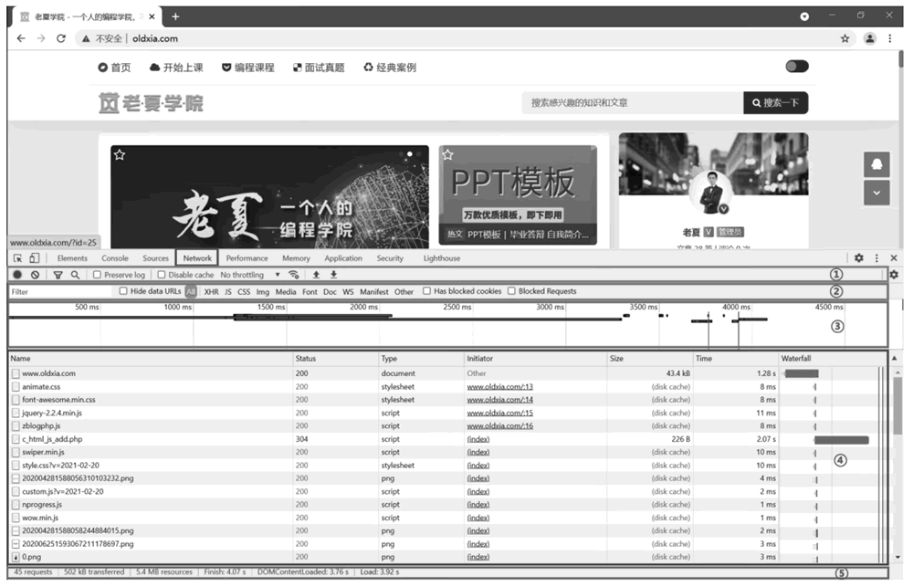
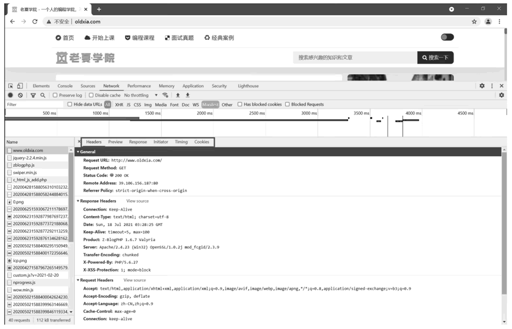

首页 > 编程笔记
HTTP是什么（入门必读）
HTTP 全称 HyperText Transfer Protocol，翻译过来叫做超文本传输协议，是因特网上应用最广泛的一种网络传输协议，所有WWW文件都必须遵守这个标准。
HTTP 是基于 TCP/IP 协议传送数据的，并且允许传送任意类型的数据对象，包括 HTML 文件、普通文本数据和二进制数据等。
HTTP 主要工作于 B/S 架构上，浏览器作为 HTTP 客户端通过 URL 向 HTTP 服务器发送所有请求，服务器则根据接收的请求，向客户端发送对应的响应信息。
HTTP 的一次性连接主要考虑到服务器面对的是成千上万个 Internet 用户，所以只能提供有限个连接，并且服务器不会让一个连接处于等待状态，因为及时地释放连接可以大幅提升服务器的执行效率。
URL 通常由 4 部分组成，即协议、主机、端口和路径，其一般的语法格式如下：
首先打开 Chrome 浏览器，右击并选择“检查”即可打开浏览器的开发者工具面板，然后在网址栏输入URL“http://www.oldxia.com”并按 Enter 键，此时就可以看到该 URL 所对应的网站页面了，而在这个过程中，浏览器向网站所在的服务器发送了一个请求，服务器接收到这个请求后进行相应处理，并返回响应的结果，包括 HTML、图片、声频或视频等，最后浏览器再进行解析，这样就可以将网页的内容展现出来了。
单击开发者工具面板中的 Network 选项，该选项由 5 部分组成，如图 1 所示。
而 Requests Table（请求列表）中的每条资源信息都表示进行了一次 HTTP 请求和响应。
下面再来详细了解 Requests Table（请求列表）中每列的具体含义，如下表所示。
此时，单击第 1 条资源 www.oldxia.com，进而可以查看该资源的详细情况，其由 6 部分组成，如图 2 所示。
1) Headers
该部分表示资源的 HTTP 头信息，其包含 6 部分内容，具体如下：
2) Preview
根据所选择资源的类型显示相对应的预览信息。
3) Response
根据所选择资源的类型显示相对应的响应内容。该响应内容就是响应体（Response Body），也是解析的目标。
4) Initiator
显示请求的依赖关系，以及发出请求的原因。
5) Timing
显示资源在整个请求生命周期中各部分所花费的时间。
6) Cookies
显示所选择资源请求和响应过程中存在的Cookie信息。

图 3 Application选项
表 7 中的每条信息表示 1 条 Cookie，其所对应每列的具体含义如表中所示。
HTTP 是基于 TCP/IP 协议传送数据的，并且允许传送任意类型的数据对象，包括 HTML 文件、普通文本数据和二进制数据等。
HTTP 主要工作于 B/S 架构上，浏览器作为 HTTP 客户端通过 URL 向 HTTP 服务器发送所有请求，服务器则根据接收的请求，向客户端发送对应的响应信息。
HTTP的特点
1) HTTP连接是一次性的
HTTP 限制每次连接只能处理一个请求，当服务器返回本次请求的响应信息后，便立即关闭连接，下一次请求时再重新建立连接。HTTP 的一次性连接主要考虑到服务器面对的是成千上万个 Internet 用户，所以只能提供有限个连接，并且服务器不会让一个连接处于等待状态，因为及时地释放连接可以大幅提升服务器的执行效率。
2) HTTP是一种无状态协议
无状态是指协议对于事务的处理没有任何记忆能力，这就极大地减轻了服务器的负担，从而可以保持较快的响应速度。3) HTTP支持持久连接
在 HTTP 1.1 中，引入了管道机制，即允许客户端不用等待上一次请求的响应信息返回，就可以发出下一次请求，但服务器必须按照接收到客户端请求的先后顺序，依次返回响应信息，以保证客户端能够区分出每次请求的响应信息，这样就能显著地减少整个下载过程所需要的时间。HTTP请求和响应
1、HTTP请求
HTTP 请求是由客户端向服务器发送的相关数据，其可以分为 4 部分内容，即请求方法（Request Method）、请求网址（Request URL）、请求头（Request Headers）和请求体（Request Body）。1) 请求方法
当在浏览器中输入 URL 并按 Enter 键时，便会以某种请求方法发起一个 HTTP 请求，常用的请求方法如下表所示。| 请求方法 | 描 述 |
|---|---|
| GET | 请求指定的页面信息，并返回实体主体 |
| HEAD | 类似于 GET 请求，只不过返回的响应中没有具体的内容，用于获取报头 |
| POST | 向指定资源提交数据进行处理请求（例如提交表单或上传文件），数据被包含在请求体中 |
| PUT | 从客户端向服务器传送的数据取代指定文档中的内容 |
| DELETE | 请求服务器删除指定的页面 |
| CONNECT | HTTP 1.1 协议中预留给能够将连接改为管道方式的代理服务器 |
| OPTIONS | 允许客户端查看服务器的性能 |
| TRACE | 回显服务器收到的请求，主要用于测试或诊断 |
| PATCH | PUT方法的补充，用来对已知资源进行局部更新 |
2) 请求网址
请求网址，即统一资源定位符 URL，通过请求网址可以唯一确定所请求的资源。URL 通常由 4 部分组成，即协议、主机、端口和路径，其一般的语法格式如下：
protocol://hostname[:port]/path/[;parameters][?query]#fragment其中，protocol 表示协议；hostname 表示主机名；port 表示端口号；path 表示路径；parameters 表示参数；query 表示查询；fragment 表示信息片断。
3) 请求头
由于 HTTP 是一种无状态协议，所以需要在请求头中添加相关的首部字段，使服务器明确客户端的目的，其常用的首部字段包括 Accept、Accept-Charset、Accept-Encoding、Accept-Language、Authorization、Cookie、Expect、From、Host、Proxy-Authorization、Referer 和 User-Agent 等。4) 请求体
请求体的内容一般通过请求方法 POST 所提交的数据获得。2、HTTP响应
HTTP 响应是由服务器返回客户端的相关数据，其可以分为 3 部分内容，即响应状态码（Status Code）、响应头（Response Headers）和响应体（Response Body）。1) 响应状态码
响应状态码如下表所示，共分为 5 种：- 1xx，表示临时响应，并需要客户端继续执行操作；
- 2xx，表示服务器成功处理了请求；
- 3xx，表示重定向，需要进一步操作以完成请求；
- 4xx，表示客户端的请求可能出错，影响了服务器的处理；
- 5xx，表示服务器在尝试处理客户端的请求时发生了内部错误，而这些错误可能是服务器本身的错误，并不是客户端的请求出错。
| 状态码 | 状态码英文 | 描 述 |
|---|---|---|
| 100 | Continue | 当前一切正常，客户端应该继续请求，如果已完成请求则忽略 |
| 101 | Switching Protocols | 服务器应客户端升级协议的请求正在切换协议 |
| 200 | OK | 服务器已成功处理了请求 |
| 201 | Created | 服务器已成功处理了请求，并且创建了新的资源 |
| 202 | Accepted | 已经收到请求消息，但是尚未进行处理 |
| 203 |
Non-Authoritative Information |
请求已经成功被响应，但是获得的负载与源头服务器的状态码为 200 的响应相比，经过了拥有转换功能的代理服务器的修改 |
| 204 | No Content | 请求已经成功了，但是客户端的客户不需要离开当前页面 |
| 205 | Reset Content | 服务器已成功处理了请求，并通知客户端重置文档视图 |
| 206 | Partial Content | 请求已经成功，并且主体包含所请求的数据区间 |
| 300 | Multiple Choices | 该请求拥有多种可能的响应 |
| 301 | Moved Permanently | 请求的资源已经被移动到了由 Location 首部字段指定的 URL 上，并且是固定不变的 |
| 302 | Found | 请求的资源被暂时移动到了由 Location 首部字段指定的 URL 上 |
| 303 | See Other | 重定向链接指向的不是新上传的资源，而是另外一个页面 |
| 304 | Not Modified | 无须再次传输请求的内容 |
| 307 | Temporary Redirect | 请求的资源被暂时移动到了由 Location 首部字段指定的 URL 上。 需要注意的是，响应状态码 307 与 302 的区别在于，307 可以确保 请求方法和消息主体不会发生变化；302 则会在一些旧客户端中 错误地将请求方法转换为 GET |
| 308 | Permanent Redirect | 请求的资源已经被永久地移动到了由 Location 首部字段指定的 URL 上 |
| 400 | Bad Request | 由于语法无效，服务器无法理解该请求 |
| 401 | Unauthorized | 缺乏目标资源要求的身份验证凭证，发送的请求未得到满足 |
| 403 | Forbidden | 服务器有能力处理该请求，但是拒绝授权访问 |
| 404 | Not Found | 服务器无法找到所请求的资源 |
| 405 | Method Not Allowed | 服务器禁止了使用当前 HTTP 方法的请求 |
| 406 | Not Acceptable | 服务器无法提供与 Accept-Charset 及 Accept-Language 首部字段相匹配的响应 |
| 407 | Proxy Authentication Required | 由于缺乏位于浏览器与可以访问所请求资源的服务器之间的代理服务器所要求的身份验证凭证，发送的请求尚未得到满足 |
| 408 | Request Time-out | 服务器将关闭空闲的连接 |
| 409 | Conflict | 请求与服务器目标资源的当前状态相冲突 |
| 410 | Gone | 请求的目标资源在原服务器上不存在了，并且是永久性的丢失 |
| 411 | Length Required | 由于缺少确定的 Content-Length 首部字段，服务器拒绝客户端的请求 |
| 412 | Precondition Failed | 目标资源的访问请求被拒绝 |
| 413 | Request Entity Too Large | 请求主体的大小超过了服务器愿意或有能力处理的限度，服务器可能会关闭连接以防止客户端继续发送该请求 |
| 414 | Request-URI Too Large | 客户端所请求的 URI 超过了服务器允许的范围 |
| 415 | Unsupported Media Type | 服务器由于不支持其有效载荷的格式，从而拒绝接受客户端的请求 |
| 416 | Requested range not satisfiable | 服务器无法处理所请求的数据区间 |
| 417 | Expectation Failed | 服务器无法满足 Expect 首部字段中的期望条件 |
| 422 | Unprocessable Entity | 服务器理解请求实体的内容类型，并且请求实体的语法是正确的，但是服务器无法处理所包含的指令 |
| 426 | Upgrade Required | 服务器拒绝处理客户端使用当前协议发送的请求，但是可以接受其使用升级后的协议发送的请求 |
| 429 | Too Many Requests | 在一定的时间内用户发送了过多的请求，即超岀了“频次限制” |
| 431 |
Request Header Fields Too Large |
请求中的首部字段的值过大，服务器拒绝接受客户端的请求 |
| 451 | Unavailable For Legal Reasons | 服务器由于法律原因，无法提供客户端请求的资源 |
| 500 | Internal Server Error | 所请求的服务器遇到意外的情况，并阻止其执行请求 |
| 501 | Not Implemented | 请求的方法不被服务器支持，因此无法被处理 |
| 502 | Bad Gateway | 作为网关或代理角色的服务器，从上游服务器中接收的响应是无 效的 |
| 503 | Service Unavailable | 服务器尚未处于可以接受请求的状态 |
| 504 | Gateway Time-out | 网关或者代理的服务器无法在规定的时间内获得需要的响应 |
| 505 | HTTP Version not supported | 服务器不支持请求所使用的HTTP版本 |
| 511 | Network Authentication Required | 客户端需要通过验证才能使用该网络 |
2) 响应头
响应头包含了服务器对客户端请求的应答信息，其常用的首部字段包括 Age、Expires、ETag、Last-Modified、Location、Server、Set-Cookie、Transfer-Encoding 和 X-Content-Type-Options 等。3) 响应体
根据所选择资源的类型，服务器返回客户端的相关数据全部在响应体中。正因为如此，在编写网络爬虫时，主要通过响应体获取网页的源代码或 JSON 数据，并可以进一步从中提取所需要的内容。3、HTTP请求和响应的过程
下面通过访问一个网站来具体了解 HTTP 请求和响应的过程。首先打开 Chrome 浏览器，右击并选择“检查”即可打开浏览器的开发者工具面板，然后在网址栏输入URL“http://www.oldxia.com”并按 Enter 键，此时就可以看到该 URL 所对应的网站页面了，而在这个过程中，浏览器向网站所在的服务器发送了一个请求，服务器接收到这个请求后进行相应处理，并返回响应的结果，包括 HTML、图片、声频或视频等，最后浏览器再进行解析，这样就可以将网页的内容展现出来了。
单击开发者工具面板中的 Network 选项，该选项由 5 部分组成，如图 1 所示。

图 1 Network选项
图 1 Network选项
- Controls（控制器）：用于控制 Network 选项的外观和功能；
- Filters（过滤器）：用于控制 Requests Table（请求列表）的具体显示内容；
- Overview（概览）：用于显示 HTTP 请求和响应的时间轴信息；
- Requests Table（请求列表）：用于按资源获取的先后顺序显示所有获取的资源信息；
- Summary（概要）：用于显示总的请求数、数据传输量和加载时间等信息。
而 Requests Table（请求列表）中的每条资源信息都表示进行了一次 HTTP 请求和响应。
下面再来详细了解 Requests Table（请求列表）中每列的具体含义，如下表所示。
| 列 | 描 述 |
|---|---|
| Name | 资源名称，单击该资源可以查看资源的详细情况 |
| Status | 响应状态码 |
| Type | 请求资源的 MIME 类型 |
| Initiator | 请求源，标记请求是由哪个对象或进程发起的 |
| Size | 从服务器下载的文件和请求的资源大小 |
| Time | 从发起请求到获取响应所用的总时间 |
| Waterfall | 网络请求的可视化瀑布流 |
此时，单击第 1 条资源 www.oldxia.com，进而可以查看该资源的详细情况，其由 6 部分组成，如图 2 所示。

图 2 资源的详细情况
图 2 资源的详细情况
1) Headers
该部分表示资源的 HTTP 头信息，其包含 6 部分内容，具体如下：
-
General，该信息表示 HTTP 请求和响应过程中的基本信息，具体如表 4 所示。
表 4 General信 息 描 述 Request URL 请求URL Request Method 请求方法 Status Code 服务器的响应状态码 Remote Address 服务器的地址和端口 Referrer Policy 来源协议
-
Response Headers，该信息表示响应头，其常用的首部字段如表 5 所示。
表 5 Response Headers中常用的首部字段首部字段 描 述 Age 实体在缓存代理中存储的时长，以秒为单位 Connection 决定当前的事务完成后，是否会关闭网络连接。如果该值是 keep-alive，则表示网络连接是持久的，不会关闭，使对同一个服务器的请求可以继续在该连接上完成；如果该值为 close，则表示客户端或服务器想要关闭该网络连接。 需要注意的是，该首部字段为通用首部字段（General Header），可用于响应头部或请求头部 Content-Type 资源的 MIME 类型。需要注意的是，该首部字段为实体报头（Entity Header），可用于响应头部或请求头部 Date 创建报文的日期和时间。需要注意的是，该首部字段为通用首部字段 （General Header），可用于响应头部或请求头部 Expires 响应的过期时间 ETag 资源的特定版本的标识符 Last-Mod 讦 ied 源头服务器认定的资源做出修改的日期及时间 Location 页面重新定向至的地址 Server 处理请求的源头服务器所用到的软件相关信息 Set-Cookie 由服务器向客户端发送 Cookie Transfer-Encoding 将实体安全传递给用户所采用的编码形式 X-Content-Type-Options 服务器用于提示客户端一定要遵循在 Content-Type 首部字段中对 MIME 类 型的设定，而不能对其进行修改 -
Request Headers，该信息表示请求头。请求头是 HTTP 请求的重要组成部分，在编写网络爬虫时，多数情况下需要设置请求头，其常用的首部字段如表 6 所示。
表 6 Request Headers中常用的首部字段首部字段 描 述 Accept 客户端支持的 MIME 类型 Accept-Charset 客户端支持的字符集类型 Accept-Encoding 客户端支持的压缩算法 Accept-Language 客户端支持的语言类型 Authorization 服务器用于验证用户代理身份的凭证 Cache-Control 用于在 HTTP 请求和响应中，通过指定指令实现缓存机制。需要注意的是，该首 部字段为通用首部字段（General Header），可用于响应头部或请求头部 Connection 决定当前的事务完成后，是否会关闭网络连接。如果该值是 keep-alive，则表示网 络连接是持久的，不会关闭，使对同一个服务器的请求可以继续在该连接上完成；如果该值为 close，则表示客户端或服务器想要关闭该网络连接。需要注意的是，该首部字段为通用首部字段（General Header），可用于响应头部或请求头部 Cookie 服务器通过 Set-Cookie 首部字段投放并存储到客户端的 Cookies Content-Type 资源的MIME类型。需要注意的是，该首部字段为实体报头（Entity Header），可用于响应头部或请求头部 Date 创建报文的日期和时间。需要注意的是，该首部字段为通用首部字段（General Header），可用于响应头部或请求头部 Expect 期望条件，并且服务器在满足该期望条件的情况下才能妥善地处理请求 From 电子邮箱地址，并且该电子邮箱地址属于发送请求的用户代理的实际掌控者的用户 Host 请求将要发送到的服务器的主机名和端口号 Proxy-Authorization 用户代理提供给代理服务器的用于身份验证的凭证 Referer 当前请求页面的来源页面的网址，即表示当前页面是通过此来源页面里的链接进入的 User-Agent 一个特征字符串，用于让网络协议的对端识别发起请求的用户代理软件的应用类型、操作系统、软件开发商及版本号等信息。在编写网络爬虫时加上此信息， 可以伪装成浏览器，如果不加，则很可能会被识别为网络爬虫 - Query String Parameters，该信息表示发起 GET 请求时所传递的参数。
- Form Data，该信息表示发起 POST 请求时所传递的参数。
- Request Payload，该信息表示发起 POST 请求时所传递的参数，数据格式为 JSON。
这里需要注意的是，Form Data 和 Request Payload 中的数据就是请求体（Request Body）。
2) Preview
根据所选择资源的类型显示相对应的预览信息。
3) Response
根据所选择资源的类型显示相对应的响应内容。该响应内容就是响应体（Response Body），也是解析的目标。
4) Initiator
显示请求的依赖关系，以及发出请求的原因。
5) Timing
显示资源在整个请求生命周期中各部分所花费的时间。
6) Cookies
显示所选择资源请求和响应过程中存在的Cookie信息。
4、HTTP请求和响应过程中的Cookie
单击开发者工具面板中的 Application 选项，然后单击该选项左侧 Storage 中的 Cookies，即可查看客户端中的 Cookie，如图 3 所示。图 3 Application选项
表 7 中的每条信息表示 1 条 Cookie，其所对应每列的具体含义如表中所示。
| 属 性 | 描 述 |
|---|---|
| Name | Cookie 的名称，并且一旦创建，该名称不可更改 |
| Value | Cookie 的值 |
| Domain | 可以访问该 Cookie 的域名 |
| Max-Age | Cookie 失效的时间，单位为秒 |
| Path | Cookie 的使用路径 |
| Size | Cookie 的大小 |
| Http | Cookie 的 httponly 属性 |
| Secure | Cookie 是否仅被使用安全协议传输 |
| SameSite | 设置 Cookie，以便在何种场景下会被发送，从而屏蔽跨站时发送 Cookie，用于阻止跨站请求伪造攻击（CSRF） |
关注公众号「站长严长生」，在手机上阅读所有教程，随时随地都能学习。内含一款搜索神器，免费下载全网书籍和视频。

微信扫码关注公众号